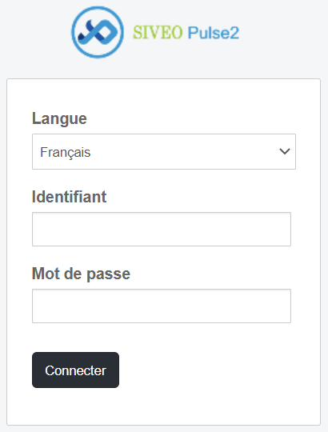
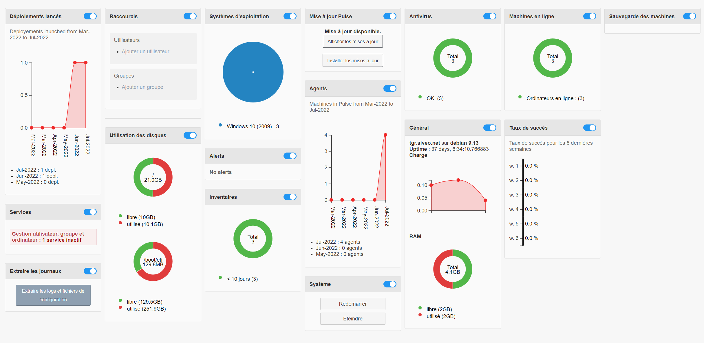
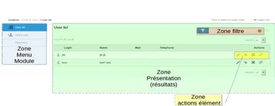
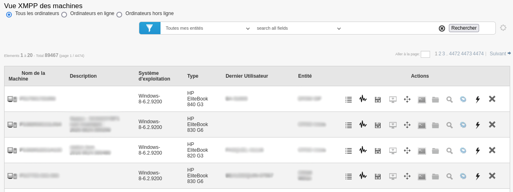
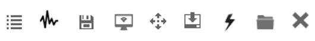

Interface de Pulse¶
Accès à l’interface¶
Pour accéder à l’interface, l’utilisateur doit saisir dans la barre d’adresse du navigateur : http://serveurpulse/mmc/
Une fois l’utilisateur arrivé sur l’interface graphique de Pulse, un formulaire de saisie d’identifiant/mot de passe lui est accessible, ainsi qu’une une liste déroulante pour choisir la langue utilisée.

Page d’accueil¶
Widget d’information¶
Sur la page d’accueil, vous retrouverez un certain nombre de widgets qui vont permettre d’obtenir des informations facilement.

Informations du serveur Pulse en lui-même :
Taux d’utilisation des disques ;
Informations générales du serveur : uptime (depuis combien de temps le serveur est en ligne), utilisation de la RAM du server ;
Les mises à jour disponibles ;
L’extraction des journaux et logs, et les fichiers de configuration du logiciel ;
La possibilité de redémarrer/arrêter directement le serveur Pulse.
Informations sur votre parc :
Les postes avec antivirus ;
Le nombre de machines en ligne et hors ligne ;
Le nombre de machines dont la configuration de la fonction “Sauvegarde” est active ;
Le nombre de postes qui sont à jour de l’inventaire, qui ne sont pas inventoriés ou hors inventaire ;
Les divers systèmes d’exploitation utilisés sur votre parc informatique.
Bandeau de localisation et options¶
Organisation de l’interface par zone¶

La zone « Filtre » permet de réduire la liste de résultats présentés suivant un critère.
La zone « Action » permet, pour l’élément de la ligne, de lancer une action.
Les actions sur les éléments¶

